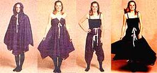

"In today's world, it seems that each new product is designed to serve a single function," notes Rock Ridgeway, of a firm called AtOM SEED (Synergetic Environmental Ecological Devices) System. "Instead of having thousands of such items, we ought to develop tools with multiple uses." And that's the concept behind the "Cameleon", a garment and liv ing device that Rock first imagined while on a trek in Colorado.
"With 45 pounds of inspiration on my back, I began to ponder ways that I could lighten my load," he recalls. "A mental inventory brought me to the realization that I was carrying a pack, poncho, tent, parka, and sleeping bag all made of nylon. It seemed to me that a single, more efficient, shape could fulfill all the functions served by that gear with less bulk and weight.
" After three years of trial and error, the first Cameleon-a meter-per-side hexagon of cloth with a tube, of the same material, in its center-was developed. By folding it, zipping it, buttoning it, and/or gathering its drawstrings, the user can adapt the fabric shape to serve one purpose after another . . . almost ,as quickly as the reptile it's named (though not spelled) after can change its hue For example while on an outdoor expedition, you could wear one Cameleon as a shirt, a second as ; pair of pants, and a third as a cape . . . and carry a fourth as a backpack. Then-when you arrive at your campsite-your shirt becomes your pillow . . . your pants evolve into a sleeping bag. . . your cape is transformed into a dropcloth... and your backpack unfolds into a tent.
"The Cameleon is only one component of an entire multiuse system that we hope to develop," Rock explains. "Imagine having ten other devices, each of which is as versatile in its own way as is this piece of clothing, and each of which can work in total geometric harmony with all the others."
The prototype "SEED Triangle", for example, is a simple three-sided piece of cloth with one drawstring: It can be worn as a loincloth, a halter top, a headband, or a scarf. It can also function as a handbag, a water carrier, or-in conjunction with Ca meleon Shelter-a tent doorway.
Another proposed product consists of a special set of rods they should be available soon) that will allow you to turn a waterproof Cameleon-literally the shirt off your back-into o geodesic tent that can be enlarged to accommodate guests by simply zipping on their Cameleons.
|
 |
|
|